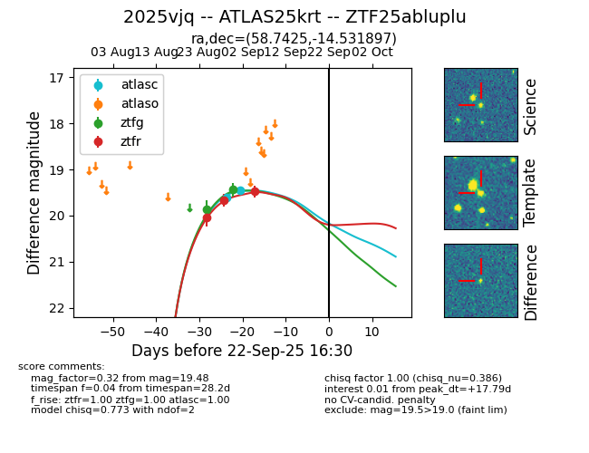
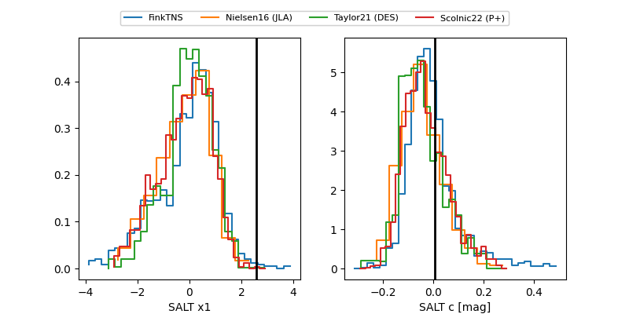

FINK: ZTF25abluplu
Lasair: ZTF25abluplu
ALeRCE: ZTF25abluplu
TNS: 2025vjq
YSE: 2025vjq
ZTF25abluplu (ztf,fink)
2025vjq (tns,yse)
ATLAS25krt (atlas)
equatorial (ra, dec) = (58.7425,-14.53190)
galactic (l, b) = (206.0438,-45.57256)


last atlasc=19.46, ztfg=19.44, ztfr=19.48
2 atlasc, 2 ztfg, 3 ztfr detections